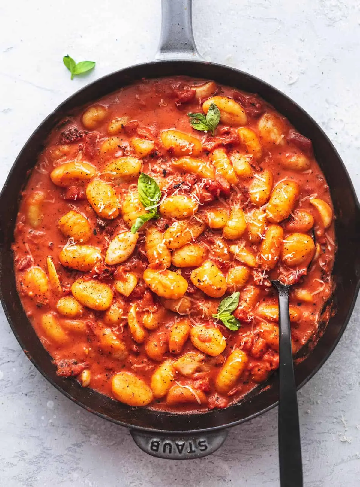

Gnocchi Al Pomodoro

Description
Gnocchi with pomodoro sauce is a simple yet incredibly satisfying combination.
Gnocchi is a small dumpling that's made with some combination of mashed potatoes, flour, and sometimes eggs or cheese. When made right, they're ultra soft and slightly chewy.
Ingredients
Gnocchi
- 4 russet potatoes
- 2 cups coarse sea salt
- 260 g all-purpose flour
- 1 tablespoon fine sea salt
- Mozzarella
- Parmigiano Reggiano
- Basil
Sauce
- 30 g extra virgin olive oil
- 2 cloves garlic
- 1 can whole peeled tomatoes
Steps
- Bring a large pot of water to boil.
- Drop the potatoes into the boiling water until easily pierced with a paring knife, about 40 minutes. Set aside to cool.
- Once the potatoes are cool enough to handle, peel them and mash them with a potato ricer.
- On a work surface, spread the potatoes into a square.
- In a bowl, combine 220 gr of flour and the 1 tablespoon fine sea salt. Sprinkle the flour mixture evenly over the potatoes.
- Knead the potato mixture, until the mixture is uniform and forms a soft, still slightly sticky dough.
If the dough is too sticky, add the remaining 40 gr of flour in small amounts, but the less flour you manage to add, the lighter your gnocchi will be.
- With a knife, cut the dough into equal-size pieces roughly the size of an egg. Working one at a time, roll the pieces into ropes about 2 cm wide. Cut the ropes into 1,5cm pieces.
- Pick up one piece of the dough, roll it over the back of a fork, and let it drop onto the prepared baking sheet. Repeat with the remaining pieces of dough.
The resulting gnocchi should be slightly curved with grooves that will capture the sauce.
- Dust the gnocchi lightly with flour, and set aside.
- Place the olive oil and garlic in a saucepan, and cook over medium heat until the garlic is fragrant and just light brown.
- Add the tomato juices and the tomatoes to the pan, crushing them by hand.
- Season to taste with salt. Simmer the sauce until slightly thickened, about 20 minutes.
- Bring a large pot of water to a boil for the gnocchi. When the water is boiling, salt it, then add the gnocchi.
- Cook the gnocchi until they rise to the top of the water, about 1 minute. As they are finished cooking, remove them to a colander with a slotted spoon.
- Spread a small amount of the tomato sauce on the bottom of a serving dish. Add the drained gnocchi, then spoon the remaining sauce on top. Toss to combine. Drizzle with a little olive oil, and serve immediately.